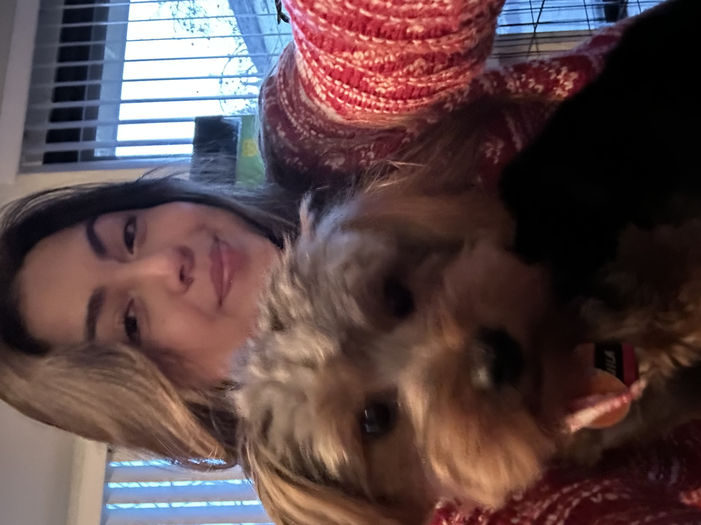

This are my upcoming and future projects. Once I'm done with this website I'll go straight into these.
I've worked multiple jobs in which I've honed my skills throughout all of them. These skills include teamwork, communication,
and everything of that sort. I've handled cash in almost all of them and have operated multiple POS systems.
With all these skills I've applied it to class as well, collaborating with others frequently for Labs done in class, projects,
and coursework as well. This year I started as President for the Physics Club and Vice President for Women in Stem at Las Positas,
which in those roles combine both soft skills and hard skills.
Throughout my coursework in school I've gotten the opportunity to enhance more hard skills, such as learning programs/technologies like MatLab, LaTex, VS Code, Eclipse, Github and Microsoft. (Word, Excel, and Powerpoint.)
